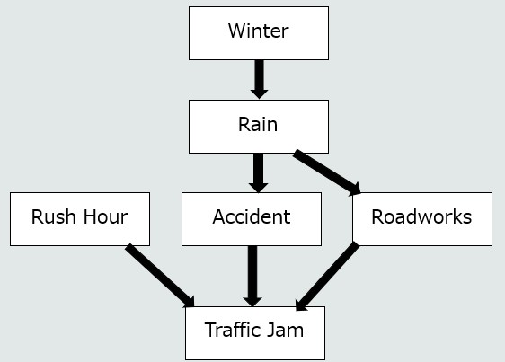

Week 5 - Bayesian Networks
Guided Learning - click to view
Guided learning is additional material for you to read outside of class time
Bayes' Theorem
As the name implies, Bayesian networks are underpinned by Bayes' theorem
This week I am providing you with a video to watch that gives a nice example packed background on Bayes' theorem
Lab 1 - Task
Today we are simply going to extend a Bayesian Network based off what you observed in the lecture
You can find the lecture example here
First, in order to run this program, we are going to need a couple of libraries:
pip install pgmpyJust to note, the above install will take a little longer than you are used to.
In addition, I also used the library 'daft' to output the model graphically:
pip install daftOk! Now we should be ready to go.
Tasks
- Simply run the provided example. Provide see what outcomes you get when you provide it different values (or do not provide certain values). Don't forget, you can also go backwards.
- See the diagram below, update the provided example so that it now accommodates the new nodes – you will need to make up the CPDs for now.
The order of difficulty (from easiest to hardest) is:
- Create 'Winter' node
- Create 'Rush Hour' node
- Update CPDs for 'Rain'
- Update CPDs for Roadworks
- Update CPDs for Traffic Jam

Lab 2 - Task
This week you have options!
Option 1
If you have yet to finish week 4's task then I would strongly advice that you continue to make progress with that. It will be very useful for your assessment
Option 2
If you would like to continue with Bayesian Networks, then consider the following task to create a system that predicts whether a student will attend a given session:
Target Variable Attendance (Yes/No) — The main variable to predict.
Nodes:
| Node | Description | Parent Nodes |
|---|---|---|
| Weather | Good or bad | - |
| DayOfWeek | Monday to Friday | - |
| AbsenceHistory | Frequency of abscences | - |
| UpcomingAssessment | Whether an assessment is scheduled soon | - |
| MotivationLevel | Student's current motivation | AbsenceHistory, UpcomingAssessment |
| Attendance | Whether the student attends today | AbsenceHistory, MotivationLevel, DayOfWeek, Weather |
Option 3
For those that would like something else to learn. We are soon starting the machine learning aspect of the module. This means that dealing with large volumes of data and performance is important.
You have been mostly using Python data structures like lists, but soon we will mostly be using arrays!
In Python we do this using the numpy library.
Have a look through the W3Schools numpy tutorial. You only need to cover the 'basics' but it is helpful to know this ahead of when we work with data.